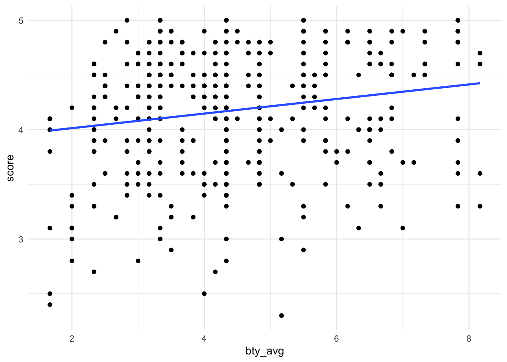
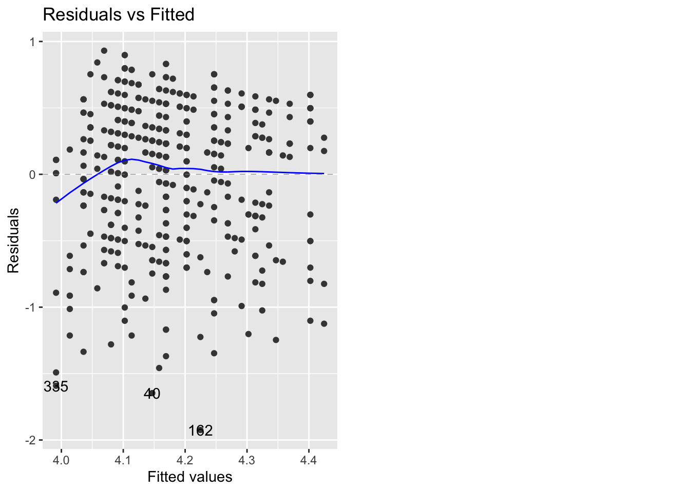
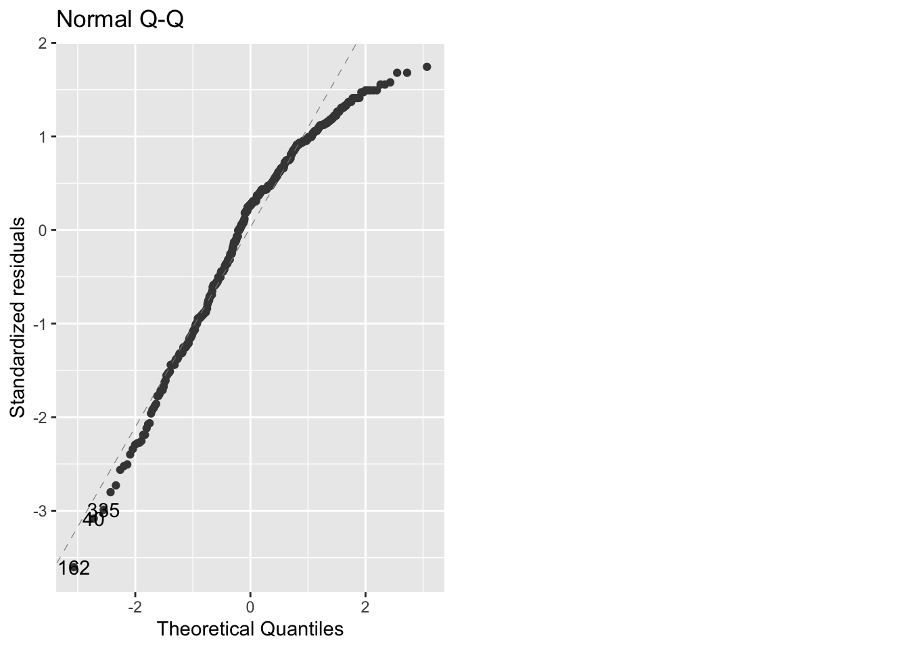
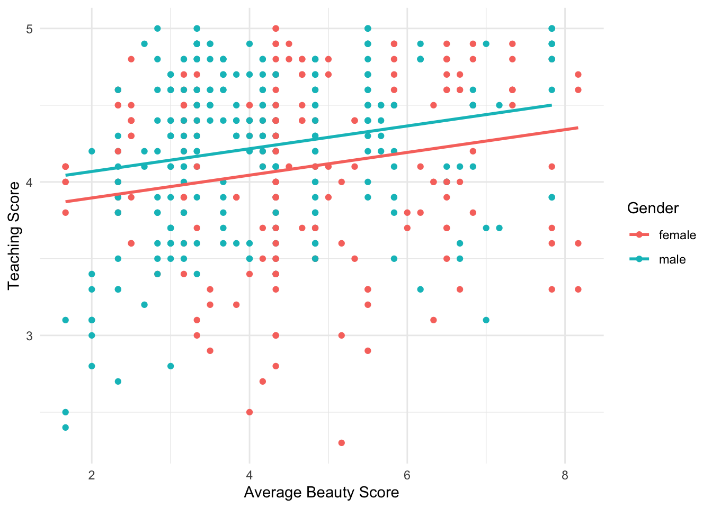
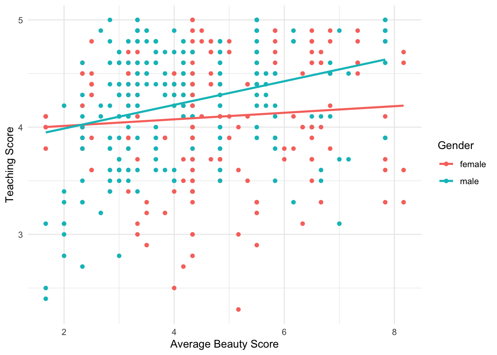

#LOAD PACKAGES
library(tidyverse)
library(openintro) #data
library(broom) # tidy() for regression output
library(ggfortify) #for autoplots for checking assumptions and residuals
#LOAD DATA
data(evals)STAT 118: Notes N
Multiple Regression
The data are gathered from end of semester student evaluations for 463 courses taught by a sample of 94 professors from the University of Texas at Austin.
Recall: Simple Linear Regression
Predicting Professor’s Teaching Evaluation Scores from their Average Beauty Score:
evals %>%
ggplot(aes(x=bty_avg, y=score)) +
geom_point() +
geom_smooth(method='lm', se=FALSE) +
theme_minimal()+
labs(xlab="Average Beauty Score", ylab = "Teaching Score")`geom_smooth()` using formula = 'y ~ x'
# build model lm(y ~ x)
fit <- lm(evals$score ~ evals$bty_avg)
tidy(fit)# A tibble: 2 × 5
term estimate std.error statistic p.value
<chr> <dbl> <dbl> <dbl> <dbl>
1 (Intercept) 3.88 0.0761 51.0 1.56e-191
2 evals$bty_avg 0.0666 0.0163 4.09 5.08e- 5\[ \hat{y} = 3.88 + 0.067 (btyavg) \]
#check residual plots
autoplot(fit, which=1)
autoplot(fit, which=2)
Simple Linear Regression with a Categorical Variable as the Predictor
What if we wanted to use a categorical variable (like gender) instead a quantitative variable (like bty_avg)?
#fit model
fit2 <- lm(evals$bty_avg ~ evals$gender)
tidy(fit2)# A tibble: 2 × 5
term estimate std.error statistic p.value
<chr> <dbl> <dbl> <dbl> <dbl>
1 (Intercept) 4.66 0.108 42.9 3.25e-163
2 evals$gendermale -0.416 0.143 -2.92 3.67e- 3\[ \hat{bty} = 4.65 - 0.416(gendermale) \]
Where did females go? They are the first “level” of gender (since they come first in the alphabet) so they are are our base level that all other genders will be compared against.
intercept (\(b_0\)): Assuming gendermale=0 (they are female), the predicted average beauty score is 4.65. gendermale (\(b_1\)): Compared to females, we predict males to get 0.416 less on their beauty scores, average.
For female faculty: We predict their beauty score to be 4.65. For male faculty: We predict the beauty score for male faculty to be 4.65 - 0.416 = 4.234
evals %>%
group_by(gender) %>%
summarize(avg_bty_score = mean(bty_avg))# A tibble: 2 × 2
gender avg_bty_score
<fct> <dbl>
1 female 4.66
2 male 4.24Simple Linear Regression with a Categorical Variable as the Predictor (more than two levels)
rank has three levels: teaching, tenure track, and tenured. Usually they are ordered alphabetically, but you can check how they are ordered using the code:
levels(evals$rank)[1] "teaching" "tenure track" "tenured" #if you want to reorder them you can use the code:
# evals$ranks <- factor(evals$ranks, levels=c("tenured", "tenure track", "teaching") )Since teaching is first, it will be the base level when we run the model.
#fit model
fit3 <- lm(evals$score ~ evals$rank)
tidy(fit3)# A tibble: 3 × 5
term estimate std.error statistic p.value
<chr> <dbl> <dbl> <dbl> <dbl>
1 (Intercept) 4.28 0.0537 79.9 1.02e-271
2 evals$ranktenure track -0.130 0.0748 -1.73 8.37e- 2
3 evals$ranktenured -0.145 0.0636 -2.28 2.28e- 2\[ \hat{score} = 4.28 - 0.12(ranktenuretrack) - 0.145(ranktenured) \]
intercept: For teaching faculty, we predict their average teaching evaluation to be 4.28 ranktenure track: Compared to teaching faculty, we predict tenure track faculty on average to have a teaching score 0.12 below. ranktenured: Compared to teaching faculty, we predict tenured faculty on average to have a teaching score 0.15 below.
For teaching faculty: average 4.28 For tenure track faculty: average 4.28 - 0.12 = 4.16 For tenured faculty: average 4.28 - 0.15 = 4.13
Multiple Linear Regression
Sometimes we may want to incorporate multiple variables into the same model (in order to get the best prediction of the y variable possible).
Parallel Slopes Model
#fit model
fit5 <- lm(evals$score ~ evals$gender + evals$bty_avg)
tidy(fit5)# A tibble: 3 × 5
term estimate std.error statistic p.value
<chr> <dbl> <dbl> <dbl> <dbl>
1 (Intercept) 3.75 0.0847 44.3 6.23e-168
2 evals$gendermale 0.172 0.0502 3.43 6.52e- 4
3 evals$bty_avg 0.0742 0.0163 4.56 6.48e- 6library(moderndive)
Attaching package: 'moderndive'The following object is masked _by_ '.GlobalEnv':
evalsThe following objects are masked from 'package:openintro':
babies, evalsevals %>%
ggplot(aes(x = bty_avg, y = score, color = gender)) +
geom_point() +
labs(x = "Average Beauty Score", y = "Teaching Score", color = "Gender") +
geom_parallel_slopes(se = FALSE) +
theme_minimal()
Interaction Terms Model
#fit model
fit6 <- lm(evals$score ~ evals$gender + evals$bty_avg + evals$gender*evals$bty_avg)
tidy(fit6)# A tibble: 4 × 5
term estimate std.error statistic p.value
<chr> <dbl> <dbl> <dbl> <dbl>
1 (Intercept) 3.95 0.118 33.5 2.92e-125
2 evals$gendermale -0.184 0.153 -1.20 2.32e- 1
3 evals$bty_avg 0.0306 0.0240 1.28 2.02e- 1
4 evals$gendermale:evals$bty_avg 0.0796 0.0325 2.45 1.46e- 2\[ \hat{score} = 3.95 - 0.18(gendermale) + 0.03(btyavg) + 0.08(btyavg)(gendermale) \]
evals %>%
ggplot(aes(x = bty_avg, y = score, color = gender)) +
geom_point() +
labs(x = "Average Beauty Score", y = "Teaching Score", color = "Gender") +
geom_smooth(method='lm', se = FALSE) +
theme_minimal()`geom_smooth()` using formula = 'y ~ x'